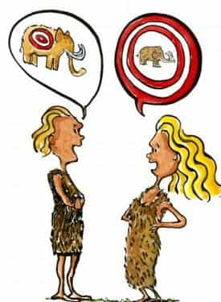

< < < Back
Irresponsible Journalists Are Using Elliot Rodger To Push A Privileged White-Girl Agenda – Return Of Kings
The unholy sorority of short-haired women “journalists”–and their bearded lapdogs–just found a new accessory for their white-girl victim narrative. A few days ago a deranged college kid, at the end of his rope of isolation and social awkwardness, tragically killed six innocent people in Santa Barbara, California. Despite his self-assessed “good looks” and driving “a nice car,” he claimed to have never so much as kissed a girl. He’d come to resent not only the women who’d ignored him since he’d arrived in the lively college-party enclave of Isla Vista, but also the men who had been successful with those very women.
He made a series of chilling videos charting his growing resentment, and belonged to a online forum called PUAHate, where he commiserated and criminally conspired with other social rejects to exact revenge on the people they collectively blamed for their failures—commercial pick-up artists (“PUAs”), women, and miscellaneous internet commentators on men’s issues. The site, which had the word “hate” right in the title, was replete with angry screeds against each of those categories. Unfortunately for all of us, at least one of its members made good on their hundreds of promises (still visible in cached copies of the now-deleted website) to “ruin the lives” of their supposed victimizers.
The PUAHate killings are many things. They’re a disturbing glimpse into the effects of a prevailing social milieu that—through technology and coddling—favors social isolation and self-pity over old-fashioned socialization and “coming out of your shell.” They’re a view into what a mentally ill young man, deprived of affection and inclusion—by both sexes—is capable of. They’re a commentary on the massive differences between online communities that encourage positive self-improvement and those that peddle in hatred, violent imagery, and self-defeatism.
Perhaps this should come as no surprise, but, like a childhood game of telephone, this story has quickly mutated in the hands of irresponsible and incompetent “journalists” with a long track record of making any story in the news fit the same set of political talking points. Not letting a tragedy go to waste, internet feminists Amanda Hess, Laurie Penny, Amanda Marcotte, Anne Theriault, Patrick McGuire, Nicole Flatow, and their ilk pounced on this story, immediately forcing it to fit their standard narrative, and flying in the face of intellectual honesty and nuance in the process. In lieu of responsible analysis, they’ve managed to explain away the entire thing with their catch-all bugaboo, “misogyny.” An incredibly complex set of circumstances, that led to an equally complex and tragic outcome, has been reduced to their explanation for every other privileged white-woman’s problem.
In doing so, they reproduce the violence of that tragic day and re-victimizing the victims by cynically distorting the truth to benefit their intellectually bankrupt agenda. They profligately squander an opportunity to arrive at real answers, and instead force-feed their readers and the countless victims-by-proxy the same vacuous propaganda.
These “journalists” and their stories have several things in common:
They wheel out the same-old “misogyny” chimera.
The catch-all phrase “misogyny” has quickly turned into the internet-feminist’s version of the “War on Terror,” a never-ending conflict with an invisible enemy that can never be defeated and could be anywhere. Like George W. Bush, they raise the “terror alert” color from a permanent orange to red whenever they sense the tide turning against their narrative. This was again the case with the PUAHate killings.
Rather than recognize that Elliot Rodger (and PUAHate) reserved some of his most poisonous hatred for men, particularly men from ethnic-minority groups, they elide the part of his ideology that doesn’t fit their version of events. Even the relatively few writers that manage to acknowledge that the PUAHate Killer made racist remarks online, quickly return to “misogyny” as the overriding force in the acts. They also fail to distinguish between Rodger’s true hatred of women, and men who simply are critical of certain women. In their hands, basically anything that doesn’t unequivocally praise women becomes misogyny, whether you’re a crazed murderer or a guy who simply thinks having no domestic skills, and being proud of it, is a deal-breaker in a woman.
They cynically ignore the fact that he killed twice as many men as he did their precious white girls.
Missing White Girl Syndrome, where a white woman’s life is worth more than anyone else’s, makes its unambiguous appearance. Several stories that have focused on Rodger’s supposed hatred of women as the singular factor in the murders fail to acknowledge that Rodger, in fact, killed four men and two women. One story leaves out the Asian victims of his crimes entirely. Rodger may have resented women, but he expressed equal hatred for the men who were successful with those women. His actions bear this out. But, we mustn’t forget that he murdered two lily-white sorority girls.
They deliberately collapse categories of disparate male communities so they can pin this horrific crime on all of them.
Commercial “pickup artists,” men’s rights activists (MRAs), and men’s interest sites (the manosphere) are wildly different communities with very little overlap except that they’re populated by men, and to a certain extent, talk about women. Commercial pickup artists sell products, ones that center on meeting women using a particular (and often flamboyant and public) style. Men’s rights activists are chiefly focused on complaining about injustices in the legal system, often adopting the same sort of victim-narrative approach as feminists. Men’s interest sites focus on self-improvement, and fulfillment in life (including their love lives) through living an independent lifestyle, understanding the nature of women and men, and disconnecting from the robust set of harmful myths fed to today’s young man (often borrowing the phrase “taking the red pill” to describe the process).
But these writers, whose elite educations suggest they’re intelligent enough to tell the difference, deliberately collapse these extraordinarily different realms into one category—places that supposedly espouse “hatred of women”—then try to pin this horrific crime (through insinuation) on the entire fake category they’ve invented in her mind. This is both transparent and intellectually dishonest.
They absurdly conflate “pickup artists” with their opposite–people who actively despise them.
Saying Elliot Rodger practiced “pickup artistry” because he belonged to PUAHate is like saying a Williamburg hipster eats meat because he’s president of a vegan club. It’s as incoherent as it is laughable. Rodger firmly rejected “pickup artistry,” self-improvement, and self-awareness. He belonged to a community devoted to not only discrediting pickup artistry, but in fact ruining the lives of people they perceived as its purveyors. Using terms like “alpha,” popularized all over internet nowadays, certifies his status as a “pickup artistry” follower as much as a suburban white kid’s use of hip-hop lingo turns him into a legit gangsta rapper.
They base their conclusions on a fundamental misunderstanding of “game.”
Game is little more than the colloquial term for what a man does to meet and attract women. It’s not “manipulation” any more than a girl wearing makeup, high heels, and a padded bra is manipulation. Game is talking to girls with confidence; being provocative, but also charming and interesting; and recognizing the difference between what a girls says she wants and the traits of the guys she actually leaves the bar with.
Despite the popularity of the term with the hoi polloi, game doesn’t equal “negging,” an old, and relatively marginal, practice engaged by commercial pickup artists over a decade ago. Wearing nice shoes is game. Doing yoga in a studio populated with actresses is game. Asking a girl for directions to a place you’ve been to ten times, as an excuse to spark a real conversation with her, is game. Game has existed since men first walked out of caves and subtly inserted killing three mastodons into his grunts at the tribe’s resident hottie. It will still exist when we all return to those caves.

They ignore the role of broken systems and Rodger’s acceptance of a defeatist set of beliefs.
Elliot Rodger didn’t kill people because he didn’t like women. He killed people because he was mentally ill, had a crippling obsession with his race and his own looks, and was willfully ignorant of what today’s woman is actually attracted to. This cocktail fermented into a growing rage, for which he had no outlet. Moreover, he was goaded on by a community of fellow degenerates (PUAHate), who played into his personal insecurities, likely fed him violent ideas, and reinforced the notion that the die has been cast for him. As far as Rodger was concerned, he couldn’t improve his social skills and his appeal to women (that is, learn “game”) and realize his potential.
Finally, a series of broken systems failed him. His parents failed to train him in basic life-saving social skills, and a female-centric mental-health system failed to recognize the unique problems faced by a young man today.
They write off some young men’s frustration with a shitty dating market as “entitlement.”
The PUAHate Killer didn’t feel he was “entitled” to sex with women. He mistakenly (and delusionally) felt he was doing everything right, and was perplexed by the fact it wasn’t working. Of course, he wasn’t doing anything right. He was doing what a bunch of other supremely unsuccessful men, and a clueless feminized media, told him was right: pretending to be a “perfect gentleman,” acquiring expensive stuff, avoiding those evil “pickup artists” with their “game,” and waiting for the women to line up outside his dorm.
But, in the real world, a man has to account for realities in the current dating climate or face the sort of loneliness that would drive a normal man crazy, never mind a sociopathic one like Rodger. The same things that impressed your mother wouldn’t impress today’s iPhone-addicted, Tinder-using, NuvaRing-wearing 20-something.

They pathologize and criminalize plain-and-simple guy talk.
The great irony is that the overriding problem here isn’t “misogyny,” but instead the very misuse and abuse of the term. It’s the mislabeling of plain-and-simple guy talk on how to be attractive to today’s woman as “manipulation” or “hatred of women” that’s creating a generation of disaffected, isolated, and confused young men with nowhere to go for answers. In pathologizing and criminalizing communities of men talking about men’s stuff, these writers are complicitous in the mental anguish of clueless men like Rodger, and in the acts that they commit. They drive them into unhealthy shitholes like PUAHate, rather than healthy, positive communities of supportive men talking like men talk.
Don’t trust the mentally ill to comment on the mentally ill.
Whether you agree with my views on women with short hair or my assessment of male feminists or not, there’s little doubt that these writers are dishonest and incompetent, at best, or deluded and dangerous, at worst. Their pathological obsession with the privileged white girl’s catch-all of “misogyny”—at the expense of any other explanatory apparatus—seems to suggest the latter. In either case, their work makes it patently clear that they have zero credibility on the tragic PUAHate killings. They’ve displayed time after time that their agenda is, and will continue to be, finding their misogyny bogeyman under every stone. And that’s it.
When the answer is actually something else—as it is with these tragic events—you simply can’t trust these so-called journalists.
Read More: We Are Silencing Men By Calling Them Misogynists


{kind=link}
{kind=link}
{kind=link}
{kind=link}